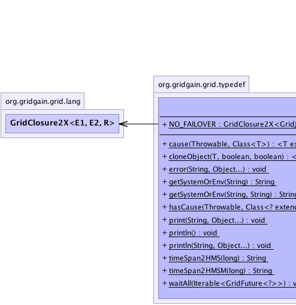
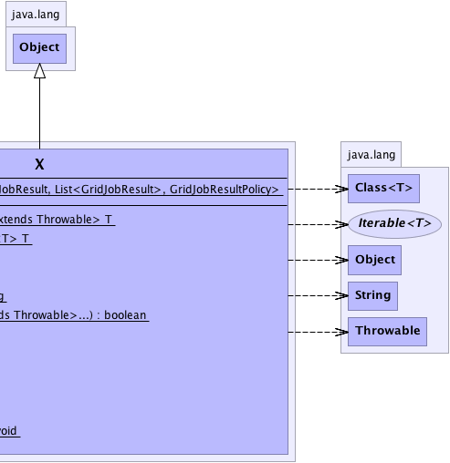

org.gridgain.grid.typedef.X
org.gridgain.grid.typedef.X
|
GridGain™ 3.6.0c
Community Edition |
|||||||||
| PREV CLASS NEXT CLASS | FRAMES NO FRAMES | |||||||||
| SUMMARY: NESTED | FIELD | CONSTR | METHOD | DETAIL: FIELD | CONSTR | METHOD | |||||||||
java.lang.Object
public final class X
Defines global scope.
Contains often used utility functions allowing to cut down on code bloat. This
is somewhat analogous to Predef in Scala. Note that this should only be used
when this typedef does not sacrifice the code readability.
| Wiki | |
| Forum |
|  |  |
| Field Summary | |
|---|---|
static GridClosure2X<GridJobResult,List<GridJobResult>,GridJobResultPolicy> |
NO_FAILOVER
Closure for no-failover policy. |
| Method Summary | ||
|---|---|---|
static
|
cause(Throwable t,
Class<T> cls)
Gets first cause if passed in 'Throwable' has given class in 'cause' hierarchy. |
|
static
|
cloneObject(T obj,
boolean deep,
boolean honorCloneable)
Clones a passed in object. |
|
static void |
error(String s1,
Object... rest)
Alias for System.err.println. |
|
static String |
getSystemOrEnv(String name)
Gets either system property or environment variable with given name. |
|
static String |
getSystemOrEnv(String name,
String dflt)
Gets either system property or environment variable with given name. |
|
static boolean |
hasCause(Throwable t,
Class<? extends Throwable>... cls)
Checks if passed in 'Throwable' has given class in 'cause' hierarchy. |
|
static void |
print(String s1,
Object... rest)
Alias for System.out.print. |
|
static void |
println()
Alias for System.out.println(). |
|
static void |
println(String s1,
Object... rest)
Alias for System.out.println. |
|
static String |
timeSpan2HMS(long span)
Creates string presentation of given time span in hh:mm:ss HMS format. |
|
static String |
timeSpan2HMSM(long span)
Creates string presentation of given time span in hh:mm:ss:msec HMSM format. |
|
static void |
waitAll(Iterable<GridFuture<?>> futs)
Synchronously waits for all futures in the collection. |
|
| Methods inherited from class java.lang.Object |
|---|
clone, equals, finalize, getClass, hashCode, notify, notifyAll, toString, wait, wait, wait |
| Field Detail |
|---|
public static final GridClosure2X<GridJobResult,List<GridJobResult>,GridJobResultPolicy> NO_FAILOVER
GridProjection.withResultClosure(GridClosure2X) to disable any failover.
GridProjection.withResultClosure(GridClosure2X)| Method Detail |
|---|
public static void println()
System.out.println().
public static void println(@Nullable
String s1,
@Nullable
Object... rest)
System.out.println.
s1 - First string to print.rest - Optional list of objects to print as well.
public static void error(@Nullable
String s1,
@Nullable
Object... rest)
System.err.println.
s1 - First string to print.rest - Optional list of objects to print as well.
public static void print(@Nullable
String s1,
@Nullable
Object... rest)
System.out.print.
s1 - First string to print.rest - Optional list of objects to print as well.@Nullable public static String getSystemOrEnv(String name)
name - Name of the system property or environment variable.
null if neither can be found for given name.
@Nullable
public static String getSystemOrEnv(String name,
String dflt)
name - Name of the system property or environment variable.dflt - Default value.
null if neither can be found for given name.public static String timeSpan2HMSM(long span)
span in hh:mm:ss:msec HMSM format.
span - Time span.
public static String timeSpan2HMS(long span)
span in hh:mm:ss HMS format.
span - Time span.
@Nullable public static <T> T cloneObject(@Nullable T obj, boolean deep, boolean honorCloneable)
deep is set to true
then this method will use deep cloning algorithm based on deep reflection
ignoring Cloneable interface unless parameter honorCloneable
is set to false.
If deep is false then this method will check the object for
Cloneable interface and use Object.clone() to make a copy,
otherwise the object itself will be returned.
T - Type of cloning object.obj - Object to create a clone from.deep - true to use algorithm of deep cloning. If false
then this method will always be checking whether a passed in object
implements interface Cloneable and if it does then method
Object.clone() will be used to clone object, if does not
then the object itself will be returned.honorCloneable - Flag indicating whether Cloneable interface
should be honored or not when cloning. This parameter makes sense only if
parameter deep is set to true.
public static boolean hasCause(@Nullable
Throwable t,
@Nullable
Class<? extends Throwable>... cls)
'Throwable' has given class in 'cause' hierarchy.
t - Throwable to check (if null, false is returned).cls - Cause classes to check (if null or empty, false is returned).
True if one of the causing exception is an instance of passed in classes,
false otherwise.@Nullable public static <T extends Throwable> T cause(@Nullable Throwable t, @Nullable Class<T> cls)
'Throwable' has given class in 'cause' hierarchy.
t - Throwable to check (if null, null is returned).cls - Cause class to get cause (if null, null is returned).
null otherwise.
public static void waitAll(@Nullable
Iterable<GridFuture<?>> futs)
throws GridException
GridException - If any of the futures threw exception.futs - Futures to wait for.
|
GridGain™ 3.6.0c
Community Edition |
|||||||||
| PREV CLASS NEXT CLASS | FRAMES NO FRAMES | |||||||||
| SUMMARY: NESTED | FIELD | CONSTR | METHOD | DETAIL: FIELD | CONSTR | METHOD | |||||||||
|
GridGain - Real Time Big Data
|
|

|
|